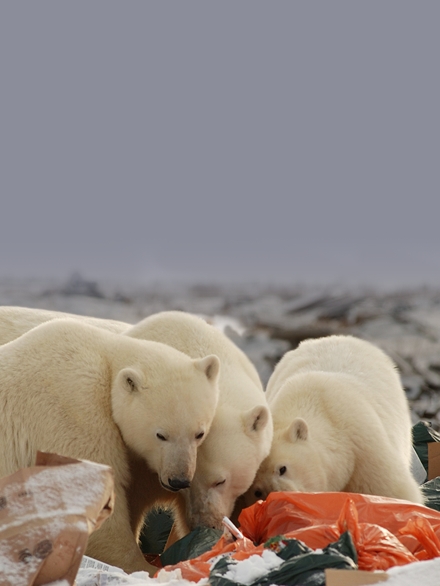
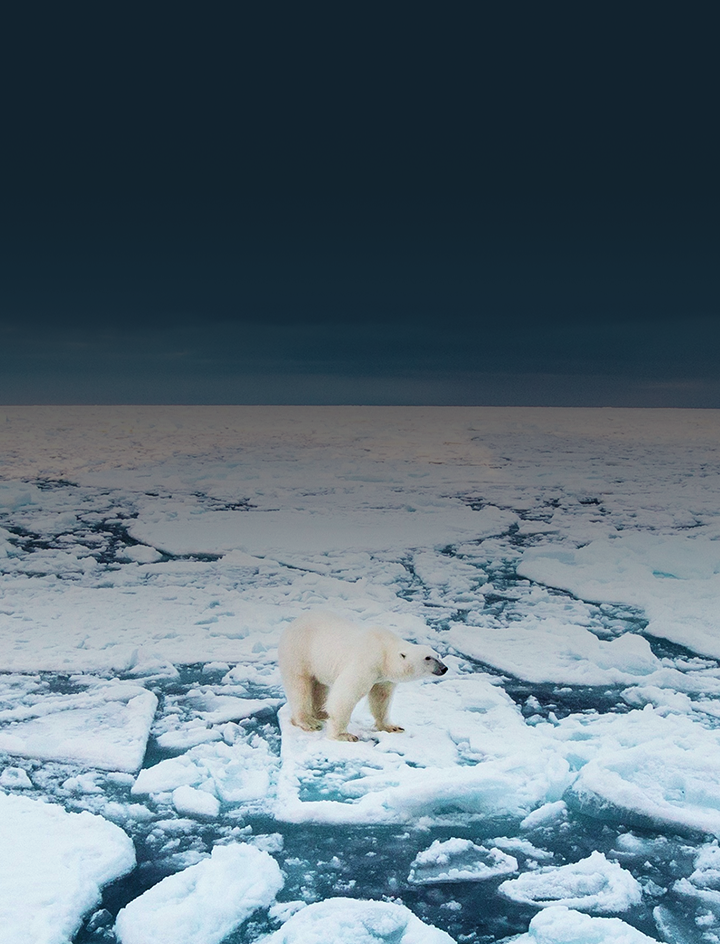

Quiz
20년 사이 북극 빙하 면적은 몇 % 감소했을까요?
5529
명
참여
*퀴즈 참여 현황은 매주 업데이트 됩니다

20년 사이 북극 빙하 면적은 몇 % 감소했을까요?
*퀴즈 참여 현황은 매주 업데이트 됩니다
북극은 북극곰의 주 서식지이자 사냥터지만
이 순간에도 녹아 내리는 빙하로 인해 북극곰은 갈 곳을 잃었습니다

지구온난화로 북극의 온도는 빠르게 상승하고 빙하는 더욱 빠르게 녹아가고 있습니다.
빙하가 무너져 내리는 경고를 결코 무시해서는 안됩니다.
23년 동안 녹은 빙하의 양

1994년~2017년까지 23년동안 녹은 빙하의
양 28조 톤. 해당 동안 해수면 약 3.5cm 상승.
영국 리즈대학교 앤드루 셰퍼드 교수는
"해수면이 1cm 높아질 때 600만명이 터전을
잃는다"라고 했습니다.
앞으로 높아질 지구 해수면

22년 8월 덴마크 그린란드 지질연구소
연구팀은 "지금까지 그린란드 빙하가 녹으면
해수면이 올라갈 것이라는 결과가 나왔지만
27cm는 지금껏 나온 예측치의
두배 수준"이라고 말했습니다..
예상 침수 피해 인원

클라이밋 센트럴 데이터에 따르면 해수면
상승과 태풍으로 우리나라의 국토 5%가
물에 잠기고 332만 여명이 침수 피해
가능성이 있다고 예측됩니다.
먹이사슬의 최상위 포식자인 북극곰이 멸종된다면
생태계의 불균형으로 인해 지구 전체의 위기로 이어집니다

WWF는 1961년에 설립된
세계 최대 비영리 환경보전 기관으로,
세계 100여 개국에서 600만 후원자들과 함께
활발히 활동하고 있습니다.
WWF는 사람과 자연이 조화를 이루며
살아가는 미래를 만들어가고자 합니다.
* 정기 후원에 참여하고 연말 정산 세액 공제 혜택 받으세요
WWF와 함께 북극곰을 지켜주세요
북극곰 후원하기